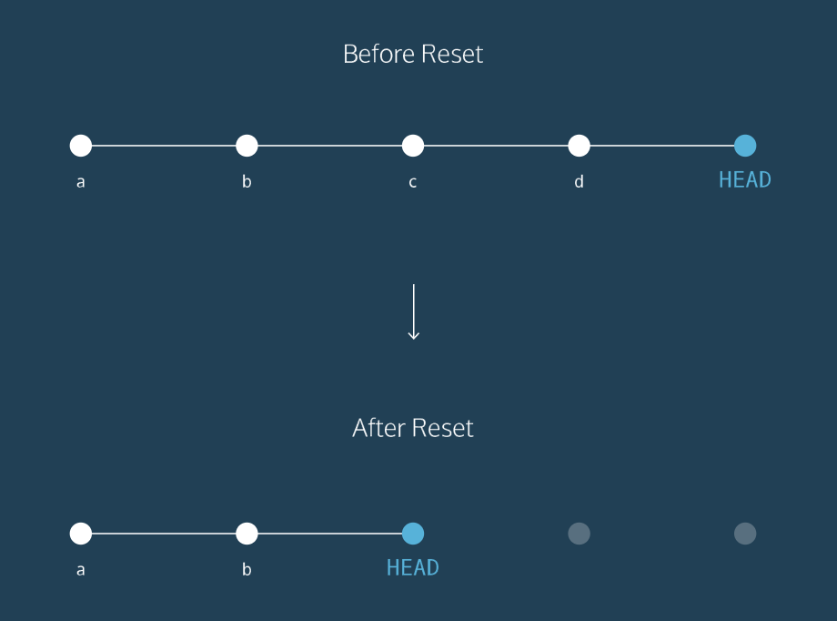
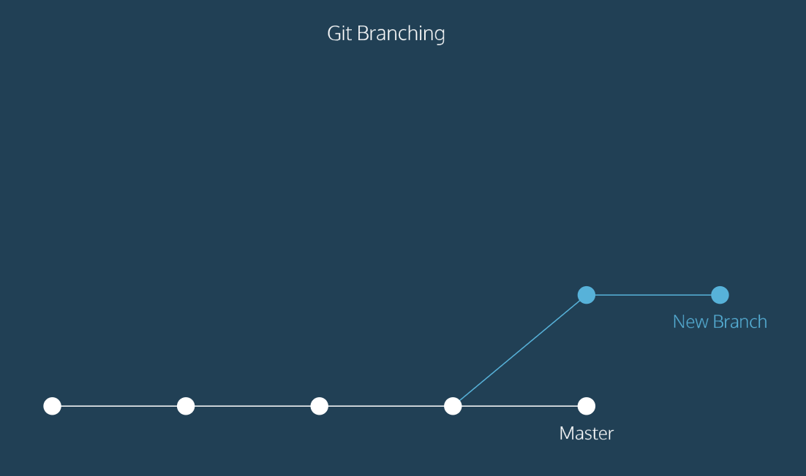

GIT - Codecademy.com
Date: 15/11/2016
GIT
Git is a software that allows you to keep track of changes made to a project over time.
Git works by recording the changes you make to a project, storing them, and allowing you to reference them as needed.
- git init initialize and set up all the tools that Git needs to begin tracking changes made to the projects. = Creates a New Git Repository.
A Git project has three parts:
- a working directory where you set up all the work by creating, editing and organizing files.
- a staging area where you’ll list changes that you’ll make in the working directory.
- a repository where Git permanently stores those changes as different versions of the project.
The workflows consists of editing files in the working directory, adding them to the staging area and saving them in the repository. To save them in Git you’ll have to use a commit.
- git status checks the status of the changes.
- git add +filename (in order to start tracking the changes made to a file) we need to add them to the staging area with git add.
- git add . add every file into the staging area.
- git diff +filename shows the differences between the working directory and the staging area.
- git commit -m “” this command will allow to store changes from the staging area inside the repository. The option -m will have to be followed by a message [-written in present tense; brief max 50 characters].
- git log shows a list of your commits:
- A 40-character code [SHA] that identifies your commit.
- The commit author
- The date & time of the commit
- The commit message
How to Backtrack
Commands:
- git show HEAD shows the head commit plus all the file changes that were committed.
- git checkout HEAD +filename will restore the file in your working directory to look exactly as it did when you last made a commit.
- git add +filename1 +filename2 will allow you to add multiple changes files to the staging area with one command.
- git reset HEAD +filename will resets the file in the staging area to be the same as the HEAD commit. It will just remove the file from the staging area.
- git reset +SHA# will enable you to rewind to SHA you’ll indicate. You’ll have to use the first 7 characters of the SHA. Then you’ll have to add it & commit again in order to fully reset it!

Git Branching
Git allow us to create branches to experiment with versions of a project. The changes created in the branch will have no effect on the master branch until you merge them.
- git branch will tell you in which branch you’re on.
“
The white dots are the commits and together form the Git project’s commit history.
The new branch contains commits from the Master but also has commits that Master doesn’t have.
”
- git branch +branchname will create a new branch. [be sure to name the branch something that describes it]
- git checkout +branchname you can switch between branches with this command. When you switch branches the * will underline the branch you’re on.
- git merge +branchname you’ll merge the branches with the master one.
merge conflict will happen when you’ve made changes in the same spot both in the master and in the branch, so Git doesn’t know which changes to keep.
When committing put in the message: commit -m ”Resolve merge conflicts”
And it will underline them in the program. Be sure to delete it all before committing again!!
- git -branch -d +branchname will delete the branch selected.
- git -branch -D +branchname will delete the branch selected if not merged yet.
Git Teamwork
Git allow us to create remotes which are shared repositories that allow multiple collaborators to work on the same project from different locations.
- git clone remote_location clone_name in this command:
- remote_location tells git where to go find the remote. This could be a web address or a filepath: /Users/teachers/Documents/some-remote.
- clone_name is the name you’ll give the directory in which Git will clone the repository.
- git remote -v you can check the list of Git’s project’s remotes.
- git fetch you can check if there have been changes in the origin file. But before you have to enter into the origin file’s folder.
The workflow for Git collaborations typically follows this order:
- Fetch and merge changes from the remote
- Create a branch to work on a new project feature
- Develop the feature on your branch and commit your work
- Fetch and merge from the remote again (in case new commits were made while you were working)
- Push your branch up to the remote for review
- git push origin +branchname will push your edits to the origin.